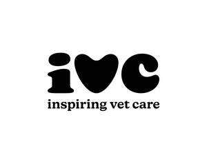
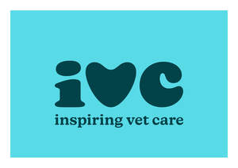
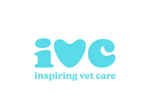
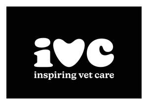
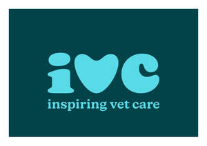
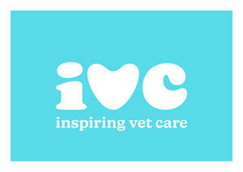

Trade Mark Journal No.2026/008 20 February 2026
UK00004334041 2 February 2026 (3,5,6,9,10,16,18,19,20,21,24,25,27,28,31,35,36,39,40,41,42,43,44,45)
Mark 1

Mark 2

Mark 3

Mark 4

Mark 5

Mark 6

- Class 3
- Non-medicated grooming preparations for animals; shampoos for pets; conditioners for pets; pet colognes; pet perfumes; pet deodorants; cleaning preparations for pet accessories; wipes impregnated with cleaning preparations for animals; fur detanglers; paw balms; coat gloss sprays for animals; stain removers for pet-related messes; non-medicated skin care preparations for animals; pet-safe air fresheners; pet-safe surface cleaners; pet-safe laundry detergents; non-medicated dental cleaning preparations for animals.
- Class 5
- Veterinary preparations; sanitary preparations for veterinary purposes; dietetic food and substances adapted for veterinary use; dietary supplements for animals; nutritional additives for animal foodstuffs; medicated grooming preparations for animals; flea and tick treatments; deworming preparations; antiparasitic collars; medicated shampoos for pets; disinfectants for veterinary use; antiseptic sprays for animals; plasters, materials for dressings; wound care preparations for pets; medicated dental care products for animals; calming supplements for pets; medicated skin care preparations for animals; medicated ear and eye drops for pets; sanitary preparations for animals; natural food supplements for animals.
- Class 6
- Metal collars for animals; metal nameplates for pets; metal cages; metal chains for leashes; metal pet gates; metal enclosures for animals; metal crates for animals.
- Class 9
- GPS tracking devices for pets; electronic collars; pet monitoring cameras; training devices using electronic signals; pet activity trackers; downloadable software for pet care management; electronic pet doors; pet identification microchips.
- Class 10
- Orthopaedic supports for animals; medical apparatus for veterinary use; pet thermometers; diagnostic kits for animal health; mobility aids for injured animals; surgical instruments for veterinary use; artificial limbs, eyes and teeth.
- Class 16
- Absorbent pads for pet training.
- Class 18
- Leashes; harnesses; collars; muzzles; pet carriers; bags for carrying pets; travel bags for animals; animal leads; clothing for animals; pet clothing made of leather or imitation leather; pouches for pet accessories; backpacks for pets; clothing for pets; pet costumes; raincoats for pets; cooling vests for animals; protective clothing for working animals; rawhide chews for pets.
- Class 19
- Outdoor kennels; pet houses made of non-metallic materials; animal enclosures; fencing for pets; pet ramps and steps made of non-metallic materials; dog agility course structures.
- Class 20
- Pet beds; cushions for pets; kennels for pets; crates for animals (non-metallic); pet furniture; scratching posts scratching posts made of wood or plastic; portable pet houses (non-metallic); non-metallic barriers and gates for pets; non-metal pet gates; storage containers for pet accessories (non-metallic); carriers for pets made of plastic; pet feeding stations; non-metallic feeding stations for pets; pet toy storage units; portable pet shelters; scratching posts.
- Class 21
- Pet feeding bowls; automatic pet feeders; pet drinking fountains; grooming brushes for animals; combs for pets; litter scoops; pet food scoops; containers for pet treats; cleaning brushes for pet accessories; pet grooming mitts; metal feeding bowls; smart feeders.
- Class 24
- Blankets for pets; pet bedding made of textiles; towels for pets; textile covers for pet furniture; mats for pet crates and carriers; pet sleeping bags; pet-themed textiles.
- Class 25
- Clothing, footwear, headwear; footwear for pets; pet-themed clothing for humans.
- Class 27
- Pet mats; rugs for pet areas; carpets for pet zones; washable training pads.
- Class 28
- Pet toys; chew toys for animals; interactive toys for pets; balls for pets; agility training equipment for animals; play tunnels for pets; puzzle toys for animals; pet exercise wheels.
- Class 31
- Pet food; edible pet treats; animal feed; beverages for pets; hay; straw; litter for animals; grains and seeds for animal consumption; live animals; bedding materials for animals; pet foodstuffs fortified with vitamins and minerals.
- Class 35
- Advertising; business management, organization and administration; office functions; business management services for veterinary practices; business consultancy in the field of pet care and animal welfare; business consultancy relating to the sale and acquisition of veterinary practices; promotional services relating to pet brands; advertising and marketing services for veterinary clinics ; recruitment services in the veterinary sector; company support services in the veterinary and funeral field for pets; advice to companies in the veterinary and funeral field for pets; commercial advice in the field of franchising; commercial assistance to companies regarding franchise establishments in the veterinary and funeral field for pets; provision of office and administrative support services for others; data entry for others; accounting for others; business advisory and consultancy services provided to the veterinary profession; provision of direct mail advertising and direct mail communication services for others; compilation of mailing lists; preparing, disseminating and sending promotional communications and information, as well as advertising material on behalf of others by means of direct mail, the internet or other electronic means; preparation and issuing of publicity material; creating, compiling and managing computer databases; market studies; market analysis; marketing advice, planning and strategy; organisation and production of special promotions for others; arranging, organising and conducting of trade exhibitions and shows; retail and online retail services in the fields of non-medicated cosmetics and toiletry preparations, non-medicated grooming preparations for animals, shampoos for pets, conditioners for pets, pet colognes, pet perfumes, pet deodorants, cleaning preparations for pet accessories, wipes impregnated with cleaning preparations for animals, fur detanglers, paw balms, coat gloss sprays for animals, stain removers for pet-related messes, non-medicated skin care preparations for animals, pet-safe air fresheners, pet-safe surface cleaners, pet-safe laundry detergents, non-medicated dental cleaning preparations for animals; retail and online retail services in the fields of veterinary preparations, sanitary preparations for veterinary purposes, dietetic food and substances adapted for veterinary use, dietary supplements for animals, nutritional additives for animal foodstuffs, medicated grooming preparations for animals, flea and tick treatments, deworming preparations, antiparasitic collars, medicated shampoos for pets, disinfectants for veterinary use, antiseptic sprays for animals, plasters, materials for dressings, wound care preparations for pets, medicated dental care products for animals, calming supplements for pets, medicated skin care preparations for animals, medicated ear and eye drops for pets, sanitary preparations for animals; retail and online retail services in the fields of metal collars for animals, metal nameplates for pets, metal cages, metal chains for leashes, metal pet gates, metal enclosures for animals, metal feeding bowls, metal crates for animals; retail and online retail services in the fields of automatic pet feeders, grooming machines for animals, electric pet nail grinders, mechanical litter boxes, pet hair dryers, pet waste disposal machines; retail and online retail services in the fields of GPS tracking devices for pets, electronic collars, pet monitoring cameras, training devices using electronic signals, pet activity trackers, downloadable software for pet care management, electronic pet doors, smart feeders, pet identification microchips; retail and online retail services in the fields of orthopaedic supports for animals, medical apparatus for veterinary use, pet thermometers, diagnostic kits for animal health, mobility aids for injured animals, surgical instruments for veterinary use, artificial limbs, eyes and teeth; retail and online retail services in the fields of heating pads for pets, climate control systems for pet habitats, pet water fountains with filtration, lighting systems for aquariums and terrariums, heated pet beds, pet incubators, pet-safe humidifiers; retail and online retail services in the fields of jewellery for pets, identification tags for pets made of precious metals, decorative collars and charms for animals made of precious metals, pet-themed jewellery for humans; retail and online retail services in the fields of leashes, harnesses, collars, muzzles, pet carriers, bags for carrying pets, travel bags for animals, animal leads, clothing for animals, pet clothing made of leather or imitation leather, pouches for pet accessories, backpacks for pets; retail and online retail services in the fields of outdoor kennels, pet houses made of non-metallic materials, animal enclosures, fencing for pets, pet ramps and steps made of non-metallic materials, dog agility course structures; retail and online retail services in the fields of pet beds, cushions for pets, kennels for pets, crates for animals (non-metallic), pet furniture, scratching posts scratching posts made of wood or plastic, portable pet houses (non-metallic), non-metallic barriers and gates for pets, non-metal pet gates, storage containers for pet accessories (non-metallic), carriers for pets made of plastic, pet feeding stations, non-metallic feeding stations for pets, pet toy storage units, portable pet shelters; retail and online retail services in the fields of pet feeding bowls, automatic pet feeders, pet drinking fountains, grooming brushes for animals, combs for pets, litter scoops, pet food scoops, containers for pet treats, cleaning brushes for pet accessories, pet grooming mitts; retail and online retail services in the fields of blankets for pets, pet bedding made of textiles, towels for pets, textile covers for pet furniture, mats for pet crates and carriers, pet sleeping bags, pet-themed textiles; retail and online retail services in the fields of clothing, footwear, headwear, clothing for pets, pet costumes, footwear for pets, raincoats for pets, cooling vests for animals, protective clothing for working animals, pet-themed clothing for humans; retail and online retail services in the fields of pet mats, rugs for pet areas, absorbent pads for pet training, carpets for pet zones, washable training pads; retail and online retail services in the fields of pet toys, chew toys for animals, interactive toys for pets, balls for pets, agility training equipment for animals, scratching posts, play tunnels for pets, puzzle toys for animals, pet exercise wheels; retail and online retail services in the fields of pet food, edible pet treats, animal feed, beverages for pets, hay, straw, litter for animals, rawhide chews for pets, grains and seeds for animal consumption, live animals, bedding materials for animals, pet foodstuffs fortified with vitamins and minerals, natural food supplements for animals; information, consultancy and advisory services in relation to all of the aforesaid services.
- Class 36
- Pet insurance services; financial services relating to pet insurance; financial sponsorship of pet-related events; fundraising services for animal welfare; processing of payments for pet services; pet adoption financing; financial support services for veterinary care; savings schemes relating to animal health, animal health care, and animal health insurance; information, consultancy and advisory services in relation to all of the aforesaid services.
- Class 39
- Transport services; transport of animals; pet courier services; pet relocation services; pet taxi services; travel arrangement services for pets; delivery of pet products; logistics services relating to pet goods; rental, hire and leasing of freezers and storage containers; transport, collection, handling, removal and storage of all types of waste including commercial, industrial, clinical, sharps, feminine hygiene, pharmaceutical, hazardous and chemical waste; transportation of waste to disposal sites; transport brokerage; operation of waste transfer stations; supply, hire, rental and leasing of containers for the disposal of waste; information, consultancy and advisory services in relation to all of the aforesaid services.
- Class 40
- Treatment of materials; custom manufacturing of pet products; processing of animal foodstuffs; treatment of animal bedding materials; recycling of pet waste; customisation of pet accessories; treatment, segregation, compaction, disinfection, sterilisation, destruction, incineration, reclamation, disposal, processing, shredding, recycling and transformation of all types of waste including clinical, sharps, feminine hygiene, pharmaceutical, hazardous, chemical, commercial and industrial waste; animal waste processing; slaughter and incineration of animals; fur processing; taxidermy; information, consultancy and advisory services in relation to all of the aforesaid services.
- Class 41
- Education and training services; educational, teaching and tuition services relating to animals and pets; training services for animals; educational services relating to pet care and veterinary science; training programmes for veterinary graduates and nurses; vocational training and education in the veterinary sector; arranging, organising and conducting of workshops, seminars, academies, colloquiums, conferences, congresses, exhibitions and symposiums for educational purposes; entertainment services for pets; pet shows; animal sports events; provision of online tutorials and electronic publications (not downloadable) relating to animals, pets and veterinary science; information, consultancy and advisory services relating to the aforesaid services.
- Class 42
- Scientific and technological services and research and design relating thereto; industrial analysis, industrial research and industrial design services; scientific and technological services relating to animal health; veterinary research and laboratory testing services; veterinary laboratory services; testing, analysis, certification and evaluation of animals and products of animal origin; provision of health certificates and certification services for the export of animals and products of animal origin; verification of traceability of animals and products of animal origin; design and development of pet products; software as a service (SaaS) for pet care management; pet DNA testing services; information, consultancy and advisory services relating to the aforesaid services.
- Class 43
- Pet boarding services.
- Class 44
- Veterinary services; veterinary hospital services; veterinary referral services; specialist veterinary services including cardiology, oncology, neurology, dermatology, ophthalmology, orthopaedics, and internal medicine; equine and farm animal veterinary services; mobile veterinary services; veterinary diagnostic testing and examination services; behavioural therapy and rehabilitation services for animals; preventative healthcare and wellbeing advice for pets and animals; animal healthcare services; animal pharmacy services; pet grooming services; hygienic and beauty care services for animals; pet spa services; pet nutrition consultancy; pet care advice; care services for animals; information, consultancy and advisory services relating to the aforesaid services.
- Class 45
- Pet adoption services; lost pet recovery services; pet sitting services; pet protection and tracking services; legal services relating to animal welfare; advocacy services for animal rights; pet custody mediation services; cremation and funeral services including pet and equine cremation; pet exhumation services; advisory and consultancy services relating to health and safety, health and safety compliance, and health and safety inspection; project studies relating to health and safety; consultancy services relating to industry and professional standards, including standards in the veterinary profession; pet cremation and funeral services; information, advisory and consultancy services relating to the aforesaid services.
Independent Vetcare Limited
Representative: Pinsent Masons LLP